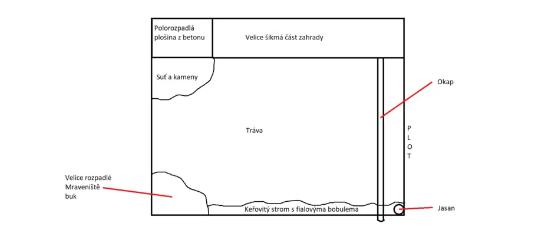
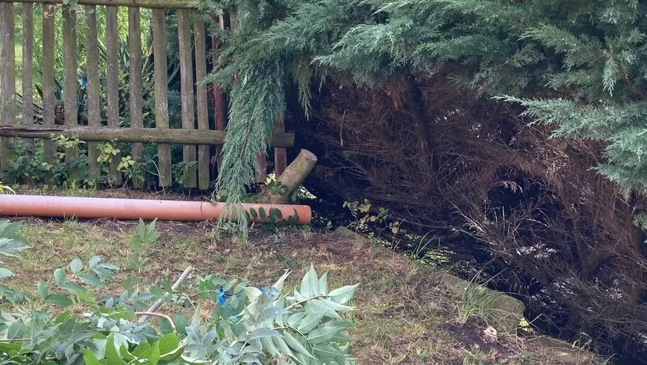

V rohu mé zahrady se tyčil středně vysoký jasan. Jelikož 2/3 našeho domu trpí na alergii na pyl a další podobné drobnosti, tak jsme se rozhodli strom pokácet. Strom také bránil ve slunečním svitu a obecně moc nepřispíval ke zdejšímu vzhledu.
Ke kácení došlo relativně náhodu, když jsme byli s přítelkyní na návštěvě u nás doma. Něco ve mně hrklo a řekl jsem si, že bych ho mohl pokácet. Tudíž jsem si vzal pilku a táta mi půjčil a doporučil použít lano. Aby když padá ten strom, aby náhodou nespadl k sousedům. To by nám ještě scházelo. Sešel jsem na zahradu a začal kácet. Ani né 30 minut a byl dole. Byl to asi jeden z největších, co jsem takhle pokácel. Začal jsem od špičky a postupně větev po větvi jsem ho odřezal. Rozhodně by bylo rychlější, kdybych ho říznul rovnou u kořene, ale to bych riskoval pád k sousedům.
